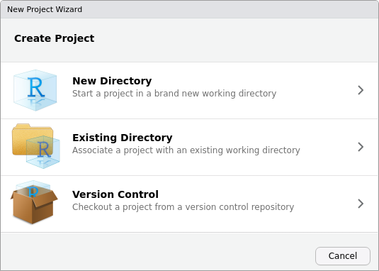
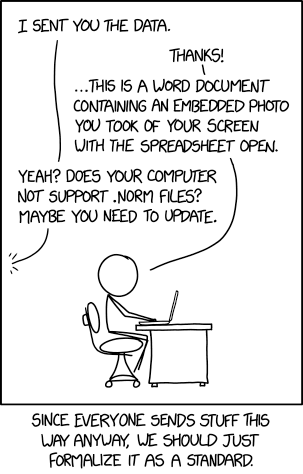
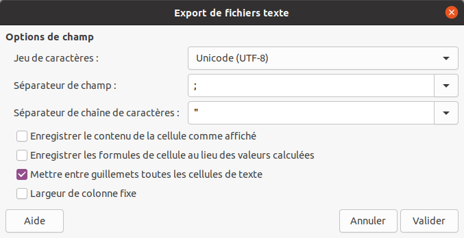

25 Bonnes pratiques
25.1 Travailler par projets
Une bonne pratique liée à l’utilisation de R consiste à organiser l’ensemble de son analyse en un projet, c’est à dire un dossier autonome contenant l’ensemble des fichiers nécessaires à l’analyse (dont les données brutes et le fichiers générés). Une telle organisation doit permettre de déplacer le dossier sur son ordinateur ou sur un autre ordinateur, tout en maintenant le bon fonctionnement du code (absence de liens brisés, de dépendances manquantes…).
Ce dossier, ou répertoire de travail (working directory), peut être défini ou retrouvé à l’aide des fonctions setwd() et getwd(), respectivement :
# Définition du répertoire de travail
setwd("/chemin/vers/mon/dossier")Une fois le répertoire de travail défini, toute référence à un fichier en utilisant un simple nom de fichier ou un chemin relatif sera interprétée relativement au répertoire de travail.
Cependant, le risque est de se retrouver dans la situation suivante :
# Définition du répertoire de travail
setwd("/chemin/uniquement/valide/sur/mon/ordinateur")Pour pallier ce problème qui rend difficilement déplaçable un dossier de projet, il existe différentes solutions parmi lesquelles :
- L’utilisation du package here,
- L’utilisation de la gestion de projet dans RStudio.
RStudio dispose d’un mécanisme permettant de créer facilement de tels projets. Il est possible de créer un projet dans RStudio à partir du menu déroulant situé en haut à droite de l’interface ou en cliquant sur New Project… depuis le menu File. Le projet peut alors être créé soit dans un nouveau dossier, soit en transformant un dossier existant (fig. 25.1).

Figure 25.1: Création d’un projet avec RStudio.
Un projet créé par RStudio est reconnaissable par la présence d’un fichier .Rproj. Ce fichier marque le dossier de plus haut niveau au sein d’un projet (répertoire de travail), à partir duquel des chemins d’accès relatifs peuvent être utilisés pour lire ou écrire des fichiers. Le répertoire de travail est automatiquement définit lors de l’ouverture d’un projet RStudio : il n’est plus nécessaire d’utiliser setwd().
L’organisation des fichiers et des sous-dossiers au sein d’un projet relève des habitudes de travail de chacun. S’il n’existe pas de consensus sur la manière d’organiser les fichiers à l’intérieur d’un projet, il peut cependant être avantageux de suivre certaines conventions (fig. 25.2), comme celles utilisées par le package rrtools par exemple.

Figure 25.2: Documents. “Copy of Copy of Copy of Copy of Copy of Copy of Copy of Copy of Copy of Copy of Copy of Copy of Copy of Copy of Copy of Copy of Copy of Copy of Copy of Copy of Copy of Copy of Copy of Copy of Copy of Copy of Copy of Copy of Copy of Copy of Copy of Copy of Copy of Untitled.doc”.83
25.2 Sauvegarder ses données
Une fois vos données correctement structurées, choisissez un format de fichier adapté pour les archiver, les diffuser ou les réutiliser (fig. 25.3). De manière générale, conservez vos données dans un fichier texte.
Dans le cas des données tabulaires, utilisez le format CSV. Comme son nom l’indique, un fichier CSV est un fichier texte contenant des valeurs séparées par une virgule. Cette simplicité lui confère plusieurs avantages, ce qui en fait le format idéal pour pérenniser des données :
- Un fichier CSV est une suite de caractères et de retours à la ligne : il est facilement éditable et peut aussi bien être lu par un humain (les données ne sont pas encodées) que par une machine.
- Le format CSV est un format ouvert : son utilisation ne dépend pas d’un éditeur particulier. Un fichier CSV peut ainsi être lu ou écrit par n’importe quel logiciel capable de manipuler des feuilles de calcul (ou par un simple éditeur de texte).
- Le format CSV est un format bien établi (ses origines remontent aux années 1970), il ne risque pas de subir un changement dramatique de spécification.
- Son apparente austérité (il ne contient pas de formatage) oblige a structurer correctement ses données.

Figure 25.3: .NORM Normal File Format. “At some point, compression becomes an aesthetic design choice. Luckily, SVG is a really flexible format, so there’s no reason it can’t support vector JPEG artifacts.”.84
La simplicité et la souplesse de ce format nécessitent cependant un peu de prudence au moment de la création d’un fichier CSV. Il est en effet possible d’utiliser n’importe quel caractère en guise de séparateur à la place d’une virgule. Si votre tableur est paramétré en français, par défaut, les données seront séparées un point-virgule pour éviter les confusions avec le séparateur décimal (de même, lors de l’ouverture d’un fichier CSV votre éditeur s’attendra à trouver des valeurs séparées par un point-virgule). Pensez à bien paramétrer votre logiciel lors de l’import ou de l’export d’un fichier CSV dans un tableur (fig. 25.4).

Figure 25.4: Paramètres lors de l’export d’un fichier au format CSV avec LibreOffice Calc (choisissez l’encodage de caractères UTF-8 et un séparateur de champ adapté).
Méfiez-vous de votre tableur ! Ces derniers ont tendance à réaliser automatiquement des conversions qui ne sont pas sans conséquences lors de l’ouverture d’un fichier.
25.3 Limiter les dépendances
Si les packages de base de R offrent de nombreuses possibilités, il est courant d’avoir besoin de fonctionnalités supplémentaires au cours d’une étude. Pour une analyse spécifique, il est très probable qu’il existe déjà un ou plusieurs packages offrant les fonctionnalités recherchées et installable depuis le CRAN. Cette offre pléthorique a cependant un revers : à chaque package supplémentaire utilisé dans votre projet, vous augmentez le risque de voir apparaître des problèmes liés à ces dépendances85.
Par exemple, FactoMineR est sans doute le package le plus utilisé pour l’analyse de données multivariées. FactoMineR possède 15 dépendances directes : d’autres packages dont il utilise les fonctionnalités. Cependant, chacune de ces dépendances est susceptible d’avoir elle même des dépendances, et ainsi de suite, si bien que FactoMineR a en réalité une longue chaîne de 103 (!) dépendances (fig. 25.5).

Figure 25.5: Réseau des dépendances du package FactoMineR (hors packages de base). Les noms des packages ont été omis pour faciliter la lecture (FactoMineR est représenté par un triangle noir, les autres packages sont représentés par des points gris).
Qu’arrivera-t-il alors si une seule des ces dépendances change drastiquement, arrête de fonctionner ou disparaît tout simplement (fig. 25.6) ? Pour réduire ce risque et sortir de cet enfer des dépendances :
- Évitez d’utiliser un package particulier quand la même tâche peut être réalisée en R basique (écrivez vos propres fonctions !).
- Quand cela est possible, préférez les packages qui n’ont pas (ou peu) de dépendances.
- N’utilisez pas la version de développement d’un package, mais installez toujours la version stable depuis le CRAN.

Figure 25.6: Dependency. “Someday ImageMagick will finally break for good and we’ll have a long period of scrambling as we try to reassemble civilization from the rubble.”.86
Le tableau n’est cependant pas totalement noir. Les packages publiés sur le CRAN doivent se conformer à des règles strictes et sont continuellement testés dans différentes configurations (systèmes d’exploitation et versions de R), obligeant les développeurs à réagir rapidement lorsqu’un bug est observé. De plus, lorsqu’un package n’est plus disponible sur le CRAN, les versions antérieures sont archivées et restent disponibles au téléchargement. Enfin, des initiatives comme rOpenSci œuvrent pour garantir un écosystème fonctionnel, en favorisant l’évaluation et la maintenance des packages.
25.4 Écrire des exemples reproductibles
Si vous souhaitez obtenir de l’aide en ligne auprès de la communauté des utilisateurs de R, sur Stack Overflow87 ou sur les listes de diffusion, la seule description de votre difficulté ne sera pas suffisante. Vous devez permettre aux autres de reproduire le problème sur leur machine pour qu’ils puissent vous proposer une solution. Pour cela, inutile de diffuser l’intégralité de votre code et de vos données, préparez un exemple qui soit :
- Minimal : utilisez le moins de code possible tout en produisant le même problème.
- Complet : fournissez tous les éléments (version de R, packages utilisés, etc.) dont un tiers a besoin pour reproduire votre problème. Utilisez les données d’exemple de R.
- Reproductible : le code que vous vous apprêtez à fournir doit reproduire le problème.
Ces trois aspects sont détaillés dans l’aide de Stack Overflow, il existe également une question dédié à l’écriture d’un exemple reproductible (reprex) avec R.
Comme le souligne Wickham88, la plupart du temps, l’écriture d’un exemple reproductible vous permettra d’identifier et de résoudre vous-même le problème.